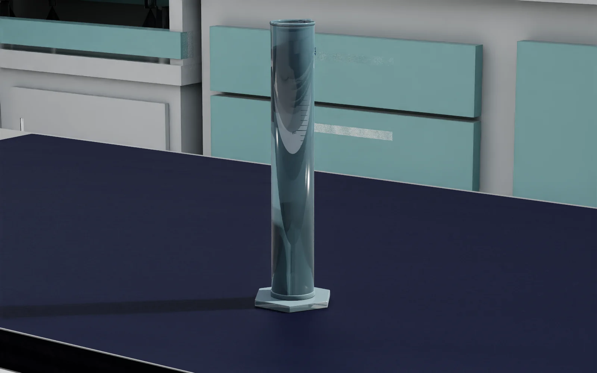
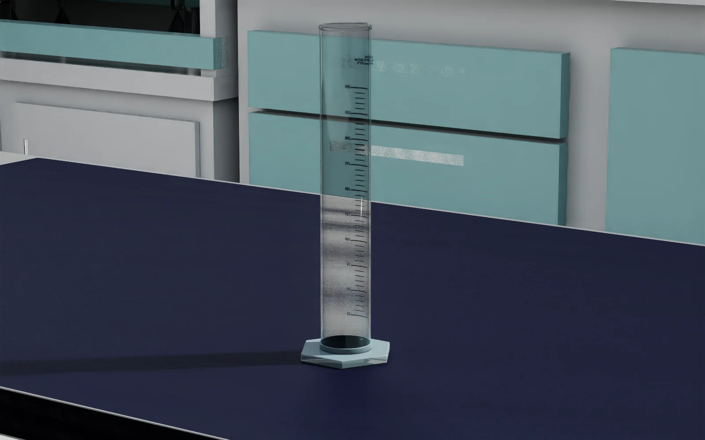
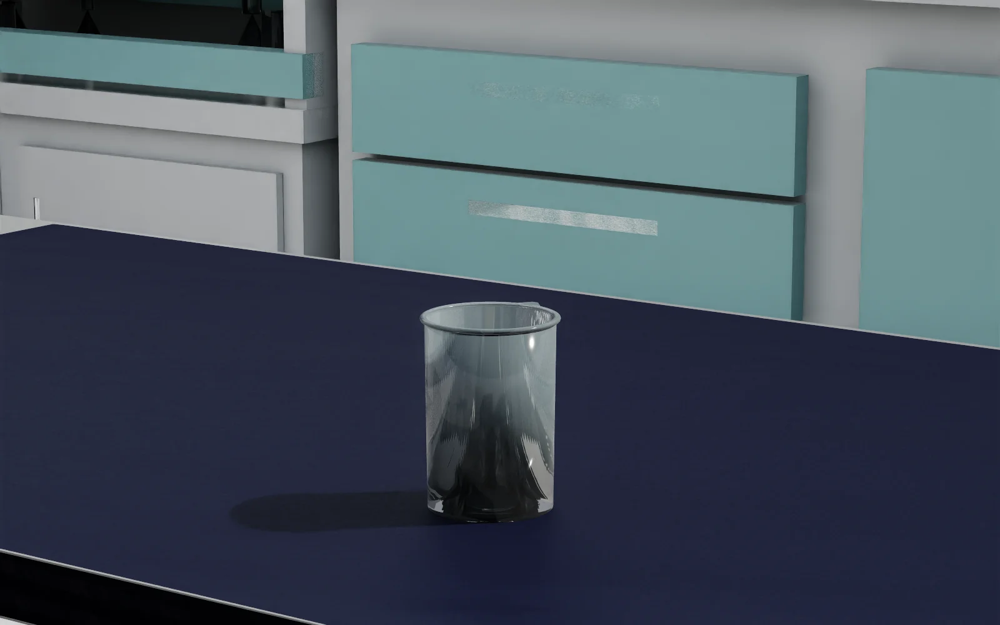
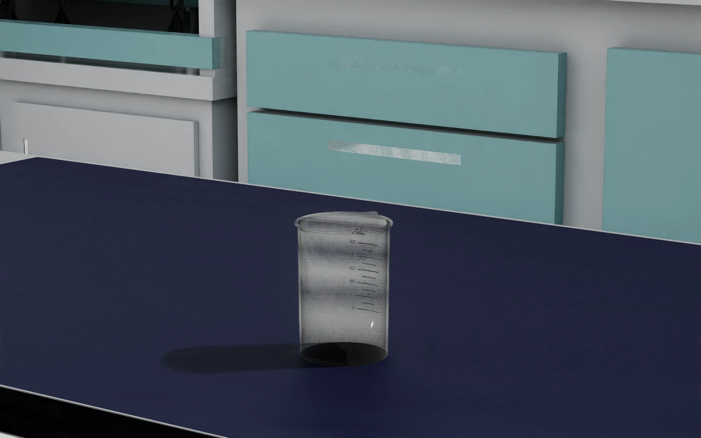
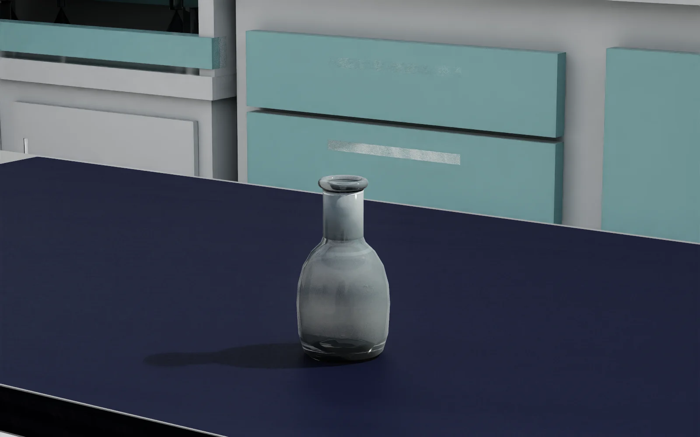
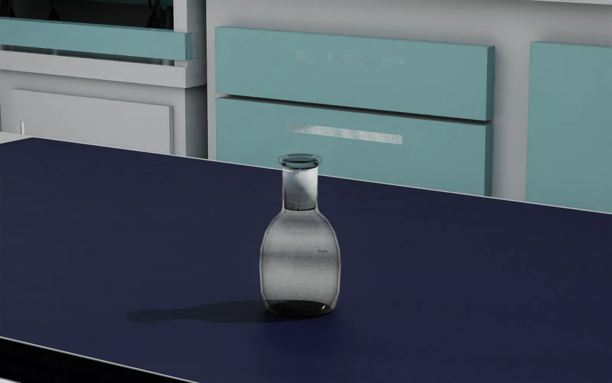
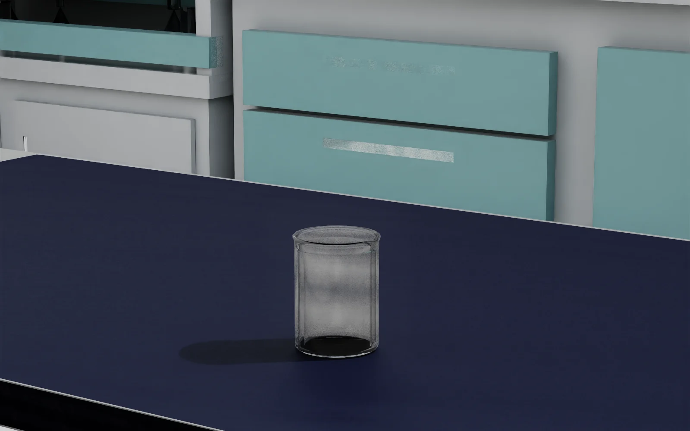
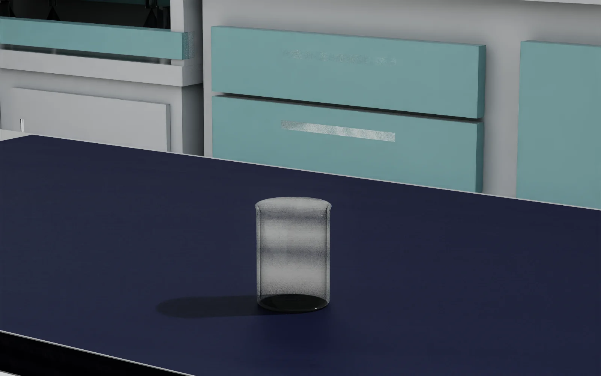

250 mL 量筒
深蓝实体感 → 背景、刻度与杯壁层次可读


VISUAL MATERIAL / GLASS V1 · 让实验玻璃真正像玻璃
我们没有重做模型，也没有碰物理。只把一组经过实景验证的 OmniGlass 参数，严谨地绑定到四种常用玻璃器皿的正确 mesh 上。
拖动查看前后差异 ↓一句话结果：旧版偏深、偏灰、像实体塑料；glass_v1 能透出背景与刻度，同时保留清楚的边缘反射。
01 / 先说人话
把“玻璃外观”从一次 GUI 调参，变成了可复现、可打包、可审计的资产能力。
02 / 同机位实景 A/B
全部使用同一间现代湿实验室、同一张 2000×800×755 mm 工作台、同一相机、灯光与物体 pose。拖动滑杆；下方双图用于没有交互能力时核对。
深蓝实体感 → 背景、刻度与杯壁层次可读


强镜面、发黑 → 透明杯壁与刻度同时保留


只改瓶身与卷边；29/42 磨口仍保留磨砂语义


同一配方也覆盖液体任务使用的动态杯体


03 / 可复现配方
reflection_color0.86629593frosting_roughness0.0不额外磨砂roughness_texture_influence1.0保持模块纹理影响enable_opacityfalse不走 cutout 透明cutout_opacity0.0记录但不启用上面五项来自样例 USD 的已 authored 输入，也是我们能够诚实复现的修改经验。
IOR、thin-walled、depth 等沿用锁定 OmniGlass 模块默认值。它们不是样例显式修改，不能混写成“本次配方”。
04 / 工程边界
source-bound profile、Typed MDL inputs、OmniGlass 与 helper 闭包、Isaac 4.1 准入。
严格消费四个不可变 package，打统一交付 ZIP，组织 A/B 证据与文档；不重写转换逻辑。
需要时显式发布新的 Task 版本。不会把材质变更悄悄塞回旧任务包。
每个 package 的 physics 与 interaction profile 和升级前输入逐字节一致；visual overlay 不含 geometry、xform、collision、mass 或 inertia authoring。
05 / 本轮刻意不做